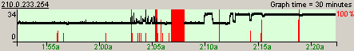

|
2003年7月28日
香港伺服器網路繼續不穩
昨天約19:10左右香港伺服器出現了兩次5-30秒大Lag的情況，死傷無數。
在今晨02:05左右香港伺服器出現5-20秒的大Lag，然後伺服器在02:07左右出現長達1分30秒的對外斷線，由於伺服器並沒有回溯，因此當然是死傷無數。

經我們檢查過記錄，不論是使用和記GE(不經HKIX)，還是要經HKIX連接天堂伺服器的其他ISP，在以上兩個時間都出現封包全部流失的情況，因此這應該不是HKIX的問題，我們估計這是天堂伺服器或其ISP(Hutchison
Telecommunications (Hong Kong) Limited)的網路設施出現短暫故障所致。
有關賠償的安排請留意官方網站的公告。我們覺得如果官方仍然不肯轉用其他穩定性較好的ISP，那麼流失的不再是封包，而是玩家了。
續報：在今晨04:55及05:05左右香港伺服器再出現大斷線的情況，經我們檢查記錄後所有和記與非和記用戶都有斷線的情況，所以這應該都不是HKIX的問題，我們估計這是天堂伺服器或其ISP(Hutchison
Telecommunications (Hong Kong) Limited)的網路設施出現短暫故障所致。
下圖為Cyber Express當時的連線資料，黑色的是反應時間(ms)，紅色的是封包流失(%)：
下圖為和記GE當時的連線資料，該電腦的時間比Cyber
Express的快約40秒因此時間上有少許偏差：

|